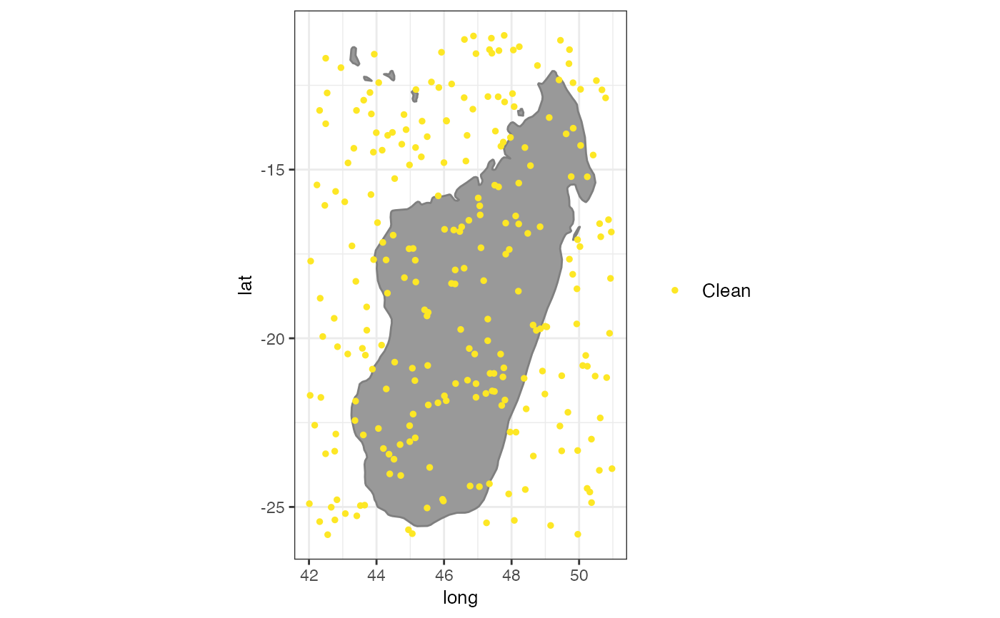

A set of plots to explore objects of the class spatialvalid. A plot
to visualize the flags from clean_coordinates
# S3 method for spatialvalid plot( x, lon = "decimallongitude", lat = "decimallatitude", bgmap = NULL, clean = TRUE, details = FALSE, pts_size = 1, font_size = 10, zoom_f = 0.1, ... )
| x | an object of the class |
|---|---|
| lon | character string. The column with the longitude coordinates. Default = “decimallongitude”. |
| lat | character string. The column with the latitude coordinates. Default = “decimallatitude”. |
| bgmap | an object of the class |
| clean | logical. If TRUE, non-flagged coordinates are included in the map. |
| details | logical. If TRUE, occurrences are color-coded by the type of flag. |
| pts_size | numeric. The point size for the plot. |
| font_size | numeric. The font size for the legend and axes |
| zoom_f | numeric. the fraction by which to expand the plotting area from the occurrence records. Increase, if countries do not show up on the background map. |
| ... | arguments to be passed to methods. |
A plot of the records flagged as potentially erroneous by
clean_coordinates.
exmpl <- data.frame(species = sample(letters, size = 250, replace = TRUE), decimallongitude = runif(250, min = 42, max = 51), decimallatitude = runif(250, min = -26, max = -11)) test <- clean_coordinates(exmpl, species = "species", tests = c("sea", "gbif", "zeros"), verbose = FALSE) summary(test)#> .val .zer .gbf .summary #> 0 0 0 0plot(test)